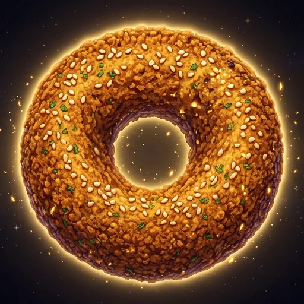

THE COSMIC FALAFEL

Aether Generators
Floor 1: Whispering Caverns
Astral Champion
Hero Equipment
The Aether Forge
Infuse massive Aether to Awaken your gear: +25% Base Attack and Max HP per level.
Aether Shade
👉 Click monster directly to unleash rapid active strikes!
Mining Depth 1
Chisel through strata blocks to discover gems, gold caches, and the ladder to deeper layers!
Botanical Nexus
Cultivate magical flora to harvest rare essences for Alchemical Transmutation and Elixirs!
The Alchemical Crucible
Synthesize botanical essences and mined gemstones into permanent stat catalysts & potent temporary elixirs!
Arcane Grimoire
Channel your Mana into tactical spells to surge production, warp time, and shatter obstacles!
Constellations of Eternity
Adventurer's Guild Contracts
Complete continuous infinite procedural tasks for Gold, Chrono Sand, Guild Seals, and Guild Rank!
Guild Quartermaster
Spend Guild Seals on permanent empire charters! Available Seals: 0
The Grand Bazaar & Caravan Exchange
Trade fluctuating commodities: buy low during crashes and sell high during market surges! Prices and caravans scale with the Market Index (your deepest Void Tower floor): x1
The High Enchanter
The High Enchanter weaves immense quantities of Gold into Golden Synergy threads, permanently multiplying your global Aether production.
ASCENSION TEMPLE
Sacrifice your earthly empire to transcend mortal limits. Harness permanent Cosmic Dust to empower all future runs!
Masteries
Permanent cross-bonuses earned from every subgame. Each is its own multiplier.
Ascension God Perks
Milestone Achievements
Lifetime Statistics
Save & Backup Management
Leaderboard
Top 50 players on each board. A green dot means they played in the last 2 minutes.
Settings
Number Notation
How large numbers are displayed. Numbers below one million always show in full.
Audio Rhythm Scale
Change the musical scale used for sound effects. Acts as a rhythmic sound box!
About Aetheria
A deep incremental game: click the Falafel, climb the Void Tower, dig, garden, brew, cast, and ascend. Progress saves automatically in this browser.
Current version: